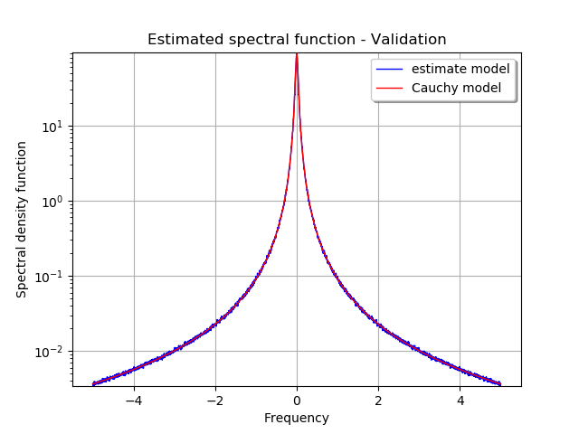

Estimate a spectral density function¶
The objective of this example is to estimate the spectral density function  from data, which can be a sample of time series or one time series.
from data, which can be a sample of time series or one time series.
The following example illustrates the case where the available data is a sample of realizations of the process, defined on the time grid , discretized every . The spectral model of the process is the Cauchy model parameterized by and .
The figure draws the graph of the real spectral model and its estimation from the sample of time series.
[1]:
from __future__ import print_function
import openturns as ot
[2]:
# generate some data
# Create the time grid
# In the context of the spectral estimate or Fourier transform use,
# we use data blocs with size of form 2^p
tMin = 0.
tstep = 0.1
size = 2**12
tgrid = ot.RegularGrid(tMin, tstep, size)
# We fix the parameter of the Cauchy model
amplitude = [5.0]
scale = [3.0]
model = ot.CauchyModel(amplitude, scale)
process = ot.SpectralGaussianProcess(model, tgrid)
# Get a time series or a sample of time series
tseries = process.getRealization()
sample = process.getSample(1000)
[3]:
# Build a spectral model factory
segmentNumber = 10
overlapSize = 0.3
factory = ot.WelchFactory(ot.Hanning(), segmentNumber, overlapSize)
[4]:
# Estimation on a TimeSeries or on a ProcessSample
estimatedModel_TS = factory.build(tseries)
estimatedModel_PS = factory.build(sample)
[5]:
# Change the filtering window
factory.setFilteringWindows(ot.Hamming())
[6]:
# Get the frequencyGrid
frequencyGrid = ot.SpectralGaussianProcess(estimatedModel_PS, tgrid).getFrequencyGrid()
[7]:
# With the model, we want to compare values
# We compare values computed with theoritical values
plotSample = ot.Sample(frequencyGrid.getN(), 3)
# Loop of comparison ==> data are saved in plotSample
for k in range(frequencyGrid.getN()):
freq = frequencyGrid.getStart() + k * frequencyGrid.getStep()
plotSample[k, 0] = freq
plotSample[k, 1] = abs(estimatedModel_PS(freq)[0, 0])
plotSample[k, 2] = abs(model(freq)[0, 0])
# Some cosmetics : labels, legend position, ...
graph = ot.Graph("Estimated spectral function - Validation", "Frequency",
"Spectral density function", True, "topright", 1.0, ot.GraphImplementation.LOGY)
# The first curve is the estimate density as function of frequency
curve1 = ot.Curve(plotSample.getMarginal([0, 1]))
curve1.setColor('blue')
curve1.setLegend('estimate model')
# The second curve is the theoritical density as function of frequency
curve2 = ot.Curve(plotSample.getMarginal([0, 2]))
curve2.setColor('red')
curve2.setLegend('Cauchy model')
graph.add(curve1)
graph.add(curve2)
graph
[7]:
